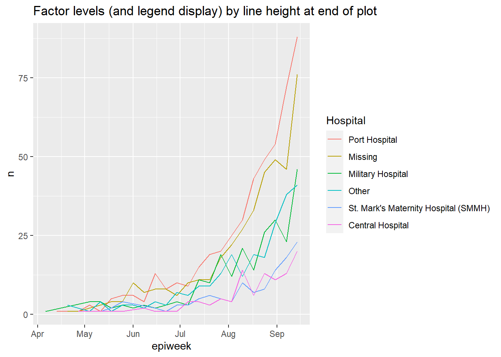

11 Factores

En R, los factores son un tipo de datos que permiten categorías ordenadas con un conjunto fijo de valores.
Normalmente, se convierte una columna de tipo numérico o de caracteres en un factor si se desea establecer un orden intrínseco a los valores (“niveles”) para que puedan mostrarse de forma no alfabética en gráficos y tablas. Otro uso común de los factores es normalizar las leyendas de los gráficos para que no fluctúen si ciertos valores están temporalmente faltantes de datos.
En esta página se muestra el uso de las funciones del paquete forcats (nombre abreviado de “For categorical variables”) y algunas funciones de R base. También se aborda el uso de lubridate y aweek para casos de factores especiales relacionados con semanas epidemiológicas.
Puedes encontrar una lista completa de las funciones de forcats en línea aquí. A continuación mostramos algunas de las más comunes.
11.1 Preparación
Cargar paquetes
Este trozo de código muestra la carga de los paquetes necesarios para el análisis. En este manual destacamos p_load() de pacman, que instala el paquete si es necesario y lo carga para su uso. También puede cargar los paquetes instalados con library() de R base. Consulta la página sobre Fundamentos de R para obtener más información sobre los paquetes de R.
pacman::p_load(
rio, # import/export
here, # filepaths
lubridate, # working with dates
forcats, # factors
aweek, # create epiweeks with automatic factor levels
janitor, # tables
tidyverse # data mgmt and viz
)Importar datos
Importamos los datos de casos de una epidemia de ébola simulada. Si quieres seguir el proceso, clica para descargar linelist “limpio” (como archivo .rds). Importa sus datos con la función import() del paquete rio (acepta muchos tipos de archivos como .xlsx, .rds, .csv - Mira la página de importación y exportación para más detalles).
# import your dataset
linelist <- import("linelist_cleaned.rds")Nueva variable categórica
Para mostrarlo en esta página utilizaremos un escenario común - la creación de una nueva variable categórica.
Ten en cuenta que si conviertes una columna numérica en una de tipo factor, no podrás calcular estadísticas numéricas sobre ella.
Crear columna
Utilizamos la columna existente days_onset_hosp (días desde el inicio de los síntomas hasta el ingreso en el hospital) y creamos una nueva columna delay_cat clasificando cada fila en una de varias categorías. Lo hacemos con la función dplyr case_when(), que aplica secuencialmente criterios lógicos (lado derecho) a cada fila y devuelve el valor correspondiente del lado izquierdo para la nueva columna delay_cat. Puedes leer más sobre case_when() en Limpieza de datos y funciones básicas.
linelist <- linelist %>%
mutate(delay_cat = case_when(
# criteria # new value if TRUE
days_onset_hosp < 2 ~ "<2 days",
days_onset_hosp >= 2 & days_onset_hosp < 5 ~ "2-5 days",
days_onset_hosp >= 5 ~ ">5 days",
is.na(days_onset_hosp) ~ NA_character_,
TRUE ~ "Check me")) Orden de valores por defecto
Tal y como se creó con case_when(), la nueva columna delay_cat es una columna categórica de tipo Character - aún no es un factor. Así, en una tabla de frecuencias, vemos que los valores únicos aparecen en un orden alfanumérico por defecto - un orden que no tiene mucho sentido intuitivo:
table(linelist$delay_cat, useNA = "always")##
## <2 days >5 days 2-5 days <NA>
## 2990 602 2040 256Del mismo modo, si hacemos un gráfico de barras, los valores también aparecen en este orden en el eje x (ver la página de conceptos básicos de ggplot para más información sobre ggplot2 - el paquete de visualización más común en R).
ggplot(data = linelist)+
geom_bar(mapping = aes(x = delay_cat))
11.2 Convertir en factor
Para convertir una columna numérica o de caracteres en una de tipo factor, puedes utilizar cualquier función del paquete forcats (muchas se detallan a continuación). Las convertirán en otra de tipo factor y luego también realizarán o permitirán cierto ordenamiento de los niveles - por ejemplo usando fct_relevel() permite especificar manualmente el orden de los niveles. La función as_factor() simplemente convierte el tipo sin ninguna otra capacidad.
La función factor() de R base convierte una columna en factor y permite especificar manualmente el orden de los niveles, como un vector de caracteres a su argumento levels =.
A continuación utilizamos mutate() y fct_relevel() para convertir la columna delay_cat de tipo carácter a tipo factor. La columna delay_cat se crea en la sección de preparación anterior.
linelist <- linelist %>%
mutate(delay_cat = fct_relevel(delay_cat))Los “valores” únicos de esta columna se consideran ahora “niveles” del factor. Los niveles tienen un orden, que puede imprimirse con la función de levels(), o alternativamente verse en una tabla de recuento mediante table() de R base o tabyl() de janitor. Por defecto, el orden de los niveles será alfanumérico, como antes. Ten en cuenta que NA no es un nivel de factor.
levels(linelist$delay_cat)## [1] "<2 days" ">5 days" "2-5 days"La función fct_relevel() tiene la utilidad adicional de permitir especificar manualmente el orden de los niveles. Simplemente escribe los valores de nivel en orden, entre comillas, separados por comas, como se muestra a continuación. Ten en cuenta que la ortografía debe coincidir exactamente con los valores. Si deseas crear niveles que no existen en los datos, utiliza fct_expand() en su lugar).
linelist <- linelist %>%
mutate(delay_cat = fct_relevel(delay_cat, "<2 days", "2-5 days", ">5 days"))Ahora podemos ver que los niveles están ordenados, como se especificó en el comando anterior, en un orden sensato.
levels(linelist$delay_cat)## [1] "<2 days" "2-5 days" ">5 days"Ahora el orden de la gráfica también tiene un sentido más intuitivo.
ggplot(data = linelist)+
geom_bar(mapping = aes(x = delay_cat))
11.3 Añadir o quitar niveles
Añadir
Si necesitas añadir niveles a un factor, puedes hacerlo con fct_expand(). Basta con escribir el nombre de la columna seguido de los nuevos niveles (separados por comas). Al tabular los valores, podemos ver los nuevos niveles y los recuentos de cero. Puedes utilizar table() de R base, o tabyl() de janitor:
linelist %>%
mutate(delay_cat = fct_expand(delay_cat, "Not admitted to hospital", "Transfer to other jurisdiction")) %>%
tabyl(delay_cat) # print table## delay_cat n percent valid_percent
## <2 days 2990 0.50781250 0.5308949
## 2-5 days 2040 0.34646739 0.3622159
## >5 days 602 0.10224185 0.1068892
## Not admitted to hospital 0 0.00000000 0.0000000
## Transfer to other jurisdiction 0 0.00000000 0.0000000
## <NA> 256 0.04347826 NANota: existe una función especial de forcats para añadir fácilmente valores faltantes (NA) como nivel. Véase la sección sobre valores faltantes más adelante.
Quitar
Si utilizas fct_drop(), los niveles “no utilizados” con recuento cero se eliminarán del conjunto de niveles. Los niveles que hemos añadido anteriormente (“No admitido en un hospital”) existen como nivel, pero ninguna fila tiene realmente esos valores. Por tanto, se eliminarán aplicando fct_drop() a nuestra columna de factores:
linelist %>%
mutate(delay_cat = fct_drop(delay_cat)) %>%
tabyl(delay_cat)## delay_cat n percent valid_percent
## <2 days 2990 0.50781250 0.5308949
## 2-5 days 2040 0.34646739 0.3622159
## >5 days 602 0.10224185 0.1068892
## <NA> 256 0.04347826 NA11.4 Ajustar el orden de los niveles
El paquete forcats ofrece funciones útiles para ajustar fácilmente el orden de los niveles de un factor (después de haber definido una columna como de tipo factor):
Estas funciones pueden aplicarse a una columna de factores en dos contextos:
- A la columna del dataframe, como es habitual, para que la transformación esté disponible para cualquier uso posterior de los datos
- Dentro de un gráfico, para que el cambio se aplique sólo dentro del gráfico
Manualmente
Esta función se utiliza para ordenar manualmente los niveles de los factores. Si se utiliza en una columna no factorial, la columna se convertirá primero en de tipo factor.
Dentro del paréntesis, indica primero el nombre de la columna del factor y, a continuación, escribe
- Todos los niveles en el orden deseado (como un vector de caracteres
c()), o - Un nivel y se corrige la colocación utilizando el argumento
after =
He aquí un ejemplo de redefinición de la columna delay_cat (que ya es de tipo Factor) y especificando todo el orden de niveles deseado.
# re-define level order
linelist <- linelist %>%
mutate(delay_cat = fct_relevel(delay_cat, c("<2 days", "2-5 days", ">5 days")))Si sólo quieres mover un nivel, puedes especificarlo sólo en fct_relevel() y dar un número al argumento after =para indicar en qué lugar del orden debe estar. Por ejemplo, el comando siguiente desplaza “<2 días” a la segunda posición:
# re-define level order
linelist %>%
mutate(delay_cat = fct_relevel(delay_cat, "<2 days", after = 1)) %>%
tabyl(delay_cat)Dentro de un gráfico
Los comandos forcats pueden utilizarse para establecer el orden de los niveles en el dataframe, o sólo dentro de un gráfico. Al utilizar el comando para “envolver” el nombre de la columna dentro del comando ggplot(), puedes invertir/nivelar/etc. la transformación sólo se aplicará dentro de ese gráfico.
A continuación, se crean dos gráficos con ggplot() (véase la página de conceptos básicos de ggplot). En el primero, la columna delay_cat se asigna al eje x del gráfico, con su orden de nivel por defecto como en linelist de datos. En el segundo ejemplo se envuelve dentro de fct_relevel() y se cambia el orden en el gráfico.
# Alpha-numeric default order - no adjustment within ggplot
ggplot(data = linelist)+
geom_bar(mapping = aes(x = delay_cat))
# Factor level order adjusted within ggplot
ggplot(data = linelist)+
geom_bar(mapping = aes(x = fct_relevel(delay_cat, c("<2 days", "2-5 days", ">5 days"))))

Ten en cuenta que el título del eje x por defecto es ahora bastante complicado - puedes sobrescribir este título con el argumento de ggplot2 labs().
Invertir
Es bastante común que se quiera invertir el orden de los niveles. Basta con envolver el factor con fct_rev().
Ten en cuenta que si deseas revertir sólo una leyenda del gráfico pero no los niveles reales del factor, puedes hacerlo con guides() (ver consejos de ggplot).
Por frecuencia
Para ordenar por la frecuencia con que el valor aparece en los datos, utiliza fct_infreq(). Cualquier valor que falte (NA) se incluirá automáticamente al final, a menos que se convierta en un nivel explícito (véase esta sección). Puedes invertir el orden envolviendo más con fct_rev().
Esta función puede utilizarse dentro de ggplot(), como se muestra a continuación.
# ordered by frequency
ggplot(data = linelist, aes(x = fct_infreq(delay_cat)))+
geom_bar()+
labs(x = "Delay onset to admission (days)",
title = "Ordered by frequency")
# reversed frequency
ggplot(data = linelist, aes(x = fct_rev(fct_infreq(delay_cat))))+
geom_bar()+
labs(x = "Delay onset to admission (days)",
title = "Reverse of order by frequency")
Por apariencia
Utiliza fct_inorder() para establecer el orden de los niveles para que coincida con el orden de aparición en los datos, empezando por la primera fila. Esto puede ser útil si primero organizas cuidadosamente arrange() los datos en el dataframe, y luego utiliza esto para establecer el orden de los factores.
Por estadística resumida de otra columna
Puedes utilizar fct_reorder() para ordenar los niveles de una columna por una estadística de resumen de otra columna. Visualmente, esto puede dar lugar a gráficos agradables en los que las barras/puntos ascienden o descienden de forma constante a través del gráfico.
En los ejemplos siguientes, el eje x es delay_cat, y el eje y es la columna numérica ct_blood (valor de umbral de ciclo). Los gráficos de caja muestran la distribución del valor CT por grupo delay_cat. Queremos ordenar los gráficos de caja en orden ascendente por mediana del grupo CT.
En el primer ejemplo de abajo, se utiliza el orden por defecto de los niveles alfa-numéricos. Se puede ver que las alturas de los gráficos de caja están mezcladas y no en ningún orden particular. En el segundo ejemplo, la columna delay_cat (asignada al eje x) se ha envuelto en fct_reorder(), la columna ct_blood se da como segundo argumento, y la “mediana” se da como tercer argumento (también podría usar “max”, “mean”, “min”, etc). Por lo tanto, el orden de los niveles de delay_cat reflejará ahora los valores ascendentes de la mediana del CT de cada grupo de delay_cat. Esto se refleja en el segundo gráfico: los gráficos de caja se han reordenado de forma ascendente. Observa cómo NA (missing) aparecerá al final, a menos que se convierta en un nivel explícito.
# boxplots ordered by original factor levels
ggplot(data = linelist)+
geom_boxplot(
aes(x = delay_cat,
y = ct_blood,
fill = delay_cat))+
labs(x = "Delay onset to admission (days)",
title = "Ordered by original alpha-numeric levels")+
theme_classic()+
theme(legend.position = "none")
# boxplots ordered by median CT value
ggplot(data = linelist)+
geom_boxplot(
aes(x = fct_reorder(delay_cat, ct_blood, "median"),
y = ct_blood,
fill = delay_cat))+
labs(x = "Delay onset to admission (days)",
title = "Ordered by median CT value in group")+
theme_classic()+
theme(legend.position = "none")
Observa que en este ejemplo no se requieren pasos previos a la llamada a ggplot() - la agrupación y los cálculos se realizan internamente en el comando ggplot.
Por valor “final”
Utiliza fct_reorder2() para los gráficos de líneas agrupadas. Ordena los niveles (y, por tanto, la leyenda) para que se alineen con la ordenación vertical de las líneas en el “final” del gráfico. Técnicamente hablando, “ordena por los valores-y asociados a los valores-x más grandes”.
Por ejemplo, si tienes líneas que muestran los recuentos de casos por hospital a lo largo del tiempo, puedes aplicar fct_reorder2() al argumento color =dentro de aes(), de forma que el orden vertical de los hospitales que aparecen en la leyenda se alinee con el orden de las líneas en el extremo terminal del gráfico. Lee más en la documentación en línea.
epidemic_data <- linelist %>% # begin with the linelist
filter(date_onset < as.Date("2014-09-21")) %>% # cut-off date, for visual clarity
count( # get case counts per week and by hospital
epiweek = lubridate::floor_date(date_onset, "week"),
hospital
)
ggplot(data = epidemic_data)+ # start plot
geom_line( # make lines
aes(
x = epiweek, # x-axis epiweek
y = n, # height is number of cases per week
color = fct_reorder2(hospital, epiweek, n)))+ # data grouped and colored by hospital, with factor order by height at end of plot
labs(title = "Factor levels (and legend display) by line height at end of plot",
color = "Hospital") # change legend title11.5 Valores faltantes
Si hay valores NA en lu columna de factores, puede convertirlos fácilmente a un nivel con nombre como “Missing” con fct_explicit_na(). Los valores NA se convierten por defecto en “(Missing)” al final del orden de los niveles. Puedes ajustar el nombre del nivel con el argumento na_level =.
A continuación, esta operación se realiza en la columna delay_cat y se imprime una tabla con tabyl() con NA convertido en “Missing delay”.
linelist %>%
mutate(delay_cat = fct_explicit_na(delay_cat, na_level = "Missing delay")) %>%
tabyl(delay_cat)## delay_cat n percent
## 2-5 days 2040 0.34646739
## <2 days 2990 0.50781250
## >5 days 602 0.10224185
## Missing delay 256 0.0434782611.6 Combinar niveles
Manualmente
Puedes ajustar las visualizaciones de los niveles manualmente con fct_recode(). Es como la función recode() de dplyr (véase Limpieza de datos y funciones básicas), pero permite la creación de nuevos niveles de factores. Si utilizas la función simple recode() en un factor, los nuevos valores recodificados serán rechazados a menos que ya hayan sido establecidos como niveles permitidos.
Esta herramienta también puede utilizarse para “combinar” niveles, asignando a varios niveles el mismo valor recodificado. Sólo hay que tener cuidado de no perder información. Considere la posibilidad de realizar estos pasos de combinación en una nueva columna (sin sobreescribir la columna existente).
fct_recode() tiene una sintaxis diferente a la de recode(). recode() utiliza OLD = NEW, mientras que fct_recode() utiliza NEW = OLD.
Los niveles actuales de delay_cat son:
levels(linelist$delay_cat)## [1] "<2 days" "2-5 days" ">5 days"Los nuevos niveles se crean utilizando la sintaxis fct_recode(column, "new" = "old", "new" = "old", "new" = "old") y se imprimen:
linelist %>%
mutate(delay_cat = fct_recode(
delay_cat,
"Less than 2 days" = "<2 days",
"2 to 5 days" = "2-5 days",
"More than 5 days" = ">5 days")) %>%
tabyl(delay_cat)## delay_cat n percent valid_percent
## Less than 2 days 2990 0.50781250 0.5308949
## 2 to 5 days 2040 0.34646739 0.3622159
## More than 5 days 602 0.10224185 0.1068892
## <NA> 256 0.04347826 NAAquí se combinan manualmente con fct_recode(). Obsérvese que no se produce ningún error en la creación de un nuevo nivel “Menos de 5 días”.
linelist %>%
mutate(delay_cat = fct_recode(
delay_cat,
"Less than 5 days" = "<2 days",
"Less than 5 days" = "2-5 days",
"More than 5 days" = ">5 days")) %>%
tabyl(delay_cat)## delay_cat n percent valid_percent
## Less than 5 days 5030 0.85427989 0.8931108
## More than 5 days 602 0.10224185 0.1068892
## <NA> 256 0.04347826 NAReducir a “Otros”
Puedes utilizar fct_other() para asignar manualmente niveles de factor a un nivel “Otro”. A continuación, todos los niveles de la columna hospital, aparte de “Port Hospital” y “Central Hospital”, se combinan en “Otros”. Puedes proporcionar el vector keep =, o drop = para mantener o eliminarlo. Puedes cambiar la visualización del nivel “Otro” con other_level =.
linelist %>%
mutate(hospital = fct_other( # adjust levels
hospital,
keep = c("Port Hospital", "Central Hospital"), # keep these separate
other_level = "Other Hospital")) %>% # All others as "Other Hospital"
tabyl(hospital) # print table## hospital n percent
## Central Hospital 454 0.07710598
## Port Hospital 1762 0.29925272
## Other Hospital 3672 0.62364130Reducir por frecuencia
Puedes combinar los niveles del factor menos frecuente automáticamente utilizando fct_lump().
Para “agrupar” muchos niveles de baja frecuencia en un grupo “Otros”, puedes hacer una de las siguientes cosas:
Establecer con
n =el número de grupos que deseas conservar. Los n niveles más frecuentes se mantendrán, y todos los demás se combinarán en “Otros”.Fijar con
prop =la proporción de frecuencia del umbral para los niveles por encima de los cuales deseas mantener. Todos los demás valores se combinarán en “Otros”.
Puedes cambiar la visualización del nivel “Otros” con other_level =. A continuación, todos los hospitales excepto los dos más frecuentes se combinan en “Other hospitals”.
linelist %>%
mutate(hospital = fct_lump( # adjust levels
hospital,
n = 2, # keep top 2 levels
other_level = "Other Hospital")) %>% # all others as "Other Hospital"
tabyl(hospital) # print table## hospital n percent
## Missing 1469 0.2494905
## Port Hospital 1762 0.2992527
## Other Hospital 2657 0.451256811.7 Mostrar todos los niveles
Una de las ventajas del uso de factores es la estandarización del aspecto de las leyendas de los gráficos y de las tablas, independientemente de los valores que estén realmente presentes en unos datos.
Si estás preparando muchas figuras (por ejemplo, para varias jurisdicciones), querrás que las leyendas y las tablas aparezcan de forma idéntica incluso con distintos niveles de cumplimentación o de composición de los datos.
En los gráficos
En una figura ggplot(), basta con añadir el argumento drop = FALSE en la función scale_xxxx() correspondiente. Se mostrarán todos los niveles de los factores, independientemente de si están presentes en los datos. Si sus niveles de columna de factores se muestran con fill =, entonces en scale_fill_discrete() incluye drop = FALSE, como se muestra a continuación. Si sus niveles se muestran con x = (al eje-x) color = o size =, deberás establecer esto con scale_color_discrete() o scale_size_discrete() según corresponda.
Este ejemplo es un gráfico de barras apiladas de la categoría de edad, por hospital. Añadiendo scale_fill_discrete(drop = FALSE) se garantiza que todos los grupos de edad aparezcan en la leyenda, aunque no estén presentes en los datos.
ggplot(data = linelist)+
geom_bar(mapping = aes(x = hospital, fill = age_cat)) +
scale_fill_discrete(drop = FALSE)+ # show all age groups in the legend, even those not present
labs(
title = "All age groups will appear in legend, even if not present in data")En tablas
Tanto table() de R base como tabyl() de janitor mostrarán todos los niveles de los factores (incluso los no utilizados).
Si utilizas count() o summarise() de dplyr para hacer una tabla, añade el argumento .drop = FALSE para incluir los recuentos de todos los niveles del factor, incluso los no utilizados.
Puedes leer más en la página de tablas descriptivas, o en la documentación de scale_discrete, o en la documentación de count(). Puedes ver otro ejemplo en la página de rastreo de contactos.
11.8 Epiweeks
Por favor, consulta la extensa discusión sobre cómo crear semanas epidemiológicas en la página de Agrupar datos. Consulta también la página Trabajar con fechas para obtener consejos sobre cómo crear y dar formato a las semanas epidemiológicas.
Epiweeks en un gráfico
Si tu objetivo es crear epiweeks para mostrarlos en un gráfico, puedes hacerlo simplemente con floor_date() de lubridate, como se explica en la página de Agrupar datos. Los valores devueltos serán del tipo Date con el formato YYYY-MM-DD. Si utilizas esta columna en un gráfico, las fechas se ordenarán correctamente de forma natural, y no tendrá que preocuparse de los niveles o de la conversión al tipo Factor. Mira el histograma ggplot() de las fechas de inicio más abajo.
En este enfoque, se puede ajustar la visualización de las fechas en un eje con scale_x_date(). Consulta la página sobre curvas epidémicas para obtener más información. Puedes especificar un formato de visualización “strptime” al argumento date_labels = de scale_x_date(). Estos formatos utilizan marcadores de posición “%” y se tratan en la página Trabajar con fechas. Utiliza “%Y” para representar un año de 4 dígitos, y “%W” o “%U” para representar el número de la semana (semana del lunes o del domingo respectivamente).
linelist %>%
mutate(epiweek_date = floor_date(date_onset, "week")) %>% # create week column
ggplot()+ # begin ggplot
geom_histogram(mapping = aes(x = epiweek_date))+ # histogram of date of onset
scale_x_date(date_labels = "%Y-W%W") # adjust disply of dates to be YYYY-WWwEpiweeks en los datos
Sin embargo, si tu propósito al factorizar no es hacer gráficos, puedes enfocar esto de dos maneras:
- Para un control preciso de la visualización, convierte la columna de la semana-epi lubrificada (AAAA-MM-DD) al formato de visualización deseado (AAAA-WWw) dentro del propio dataframe, y luego conviértala en tipo Factor.
En primer lugar, utiliza format() para convertir la visualización de la fecha de YYYY-MM-DD a YYYY-Www (consulta la página Trabajar con fechas). En este proceso el tipo será convertida a carácter. A continuación, convierta de carácter a tipo Factor con factor().
linelist <- linelist %>%
mutate(epiweek_date = floor_date(date_onset, "week"), # create epiweeks (YYYY-MM-DD)
epiweek_formatted = format(epiweek_date, "%Y-W%W"), # Convert to display (YYYY-WWw)
epiweek_formatted = factor(epiweek_formatted)) # Convert to factor
# Display levels
levels(linelist$epiweek_formatted)## [1] "2014-W13" "2014-W14" "2014-W15" "2014-W16" "2014-W17"
## [6] "2014-W18" "2014-W19" "2014-W20" "2014-W21" "2014-W22"
## [11] "2014-W23" "2014-W24" "2014-W25" "2014-W26" "2014-W27"
## [16] "2014-W28" "2014-W29" "2014-W30" "2014-W31" "2014-W32"
## [21] "2014-W33" "2014-W34" "2014-W35" "2014-W36" "2014-W37"
## [26] "2014-W38" "2014-W39" "2014-W40" "2014-W41" "2014-W42"
## [31] "2014-W43" "2014-W44" "2014-W45" "2014-W46" "2014-W47"
## [36] "2014-W48" "2014-W49" "2014-W50" "2014-W51" "2015-W00"
## [41] "2015-W01" "2015-W02" "2015-W03" "2015-W04" "2015-W05"
## [46] "2015-W06" "2015-W07" "2015-W08" "2015-W09" "2015-W10"
## [51] "2015-W11" "2015-W12" "2015-W13" "2015-W14" "2015-W15"
## [56] "2015-W16"PELIGRO: Si colocas las semanas por delante de los años (“Www-YYY”) (“%W-%Y”), la ordenación por defecto del nivel alfanumérico será incorrecta (por ejemplo, 01-2015 estará antes que 35-2014). Podría ser necesario ajustar manualmente el orden, lo que sería un proceso largo y doloroso.
-
Para una visualización rápida por defecto, utiliza el paquete aweek y su función
date2week(). Puedes establecer el día de comienzo conweek_start =, y si establecesfactor = TRUEentonces la columna de salida es un factor ordenado. Como ventaja, el factor incluye niveles para todas las semanas posibles en el lapso - incluso si no hay casos esa semana.
df <- linelist %>%
mutate(epiweek = date2week(date_onset, week_start = "Monday", factor = TRUE))
levels(df$epiweek)Consulta la página Trabajar con fechas para obtener más información sobre aweek. También ofrece la función inversa week2date().
11.9 Recursos
Página de R for Data Science en español sobre factores viñeta del paquete aweek